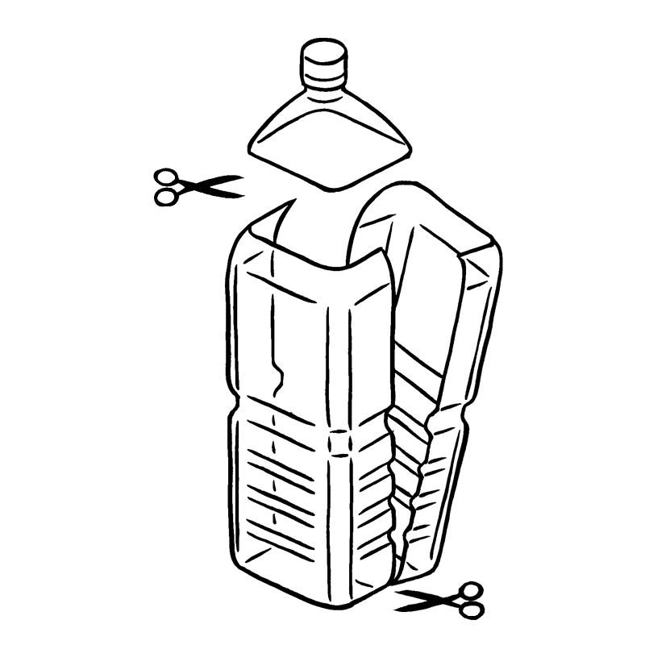
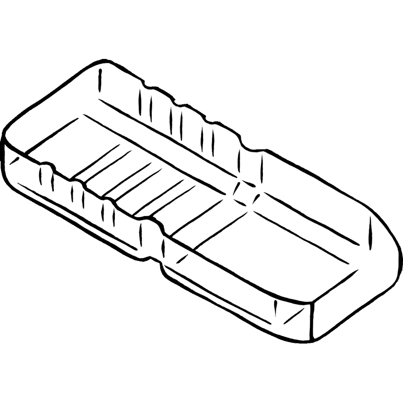
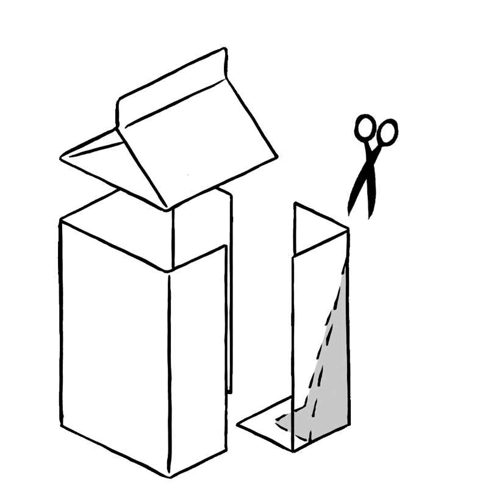
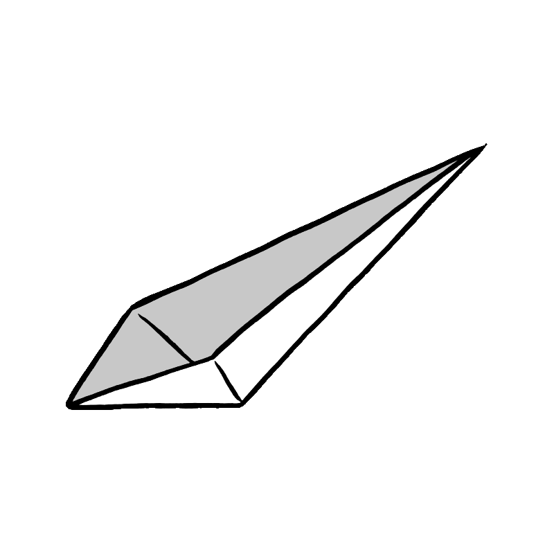
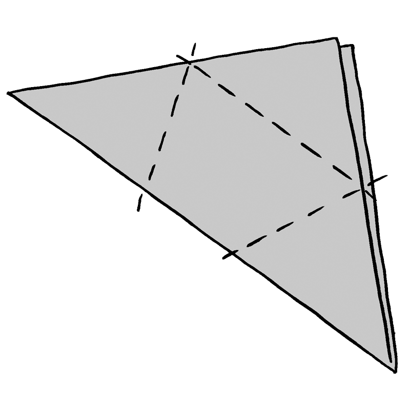
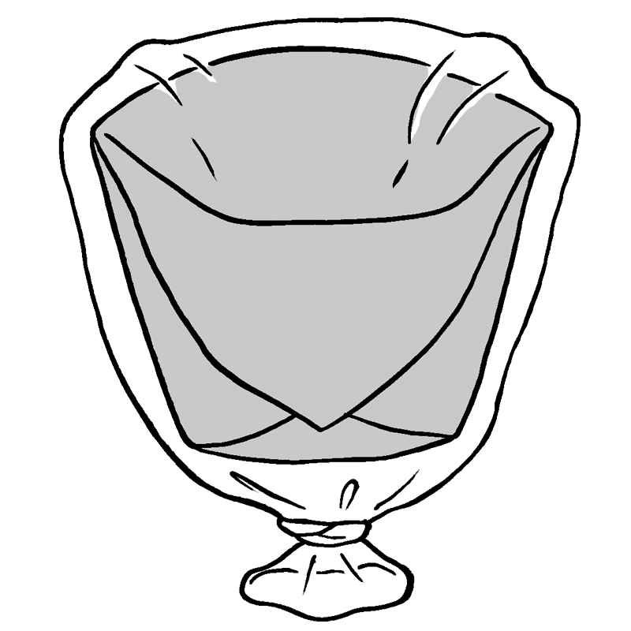
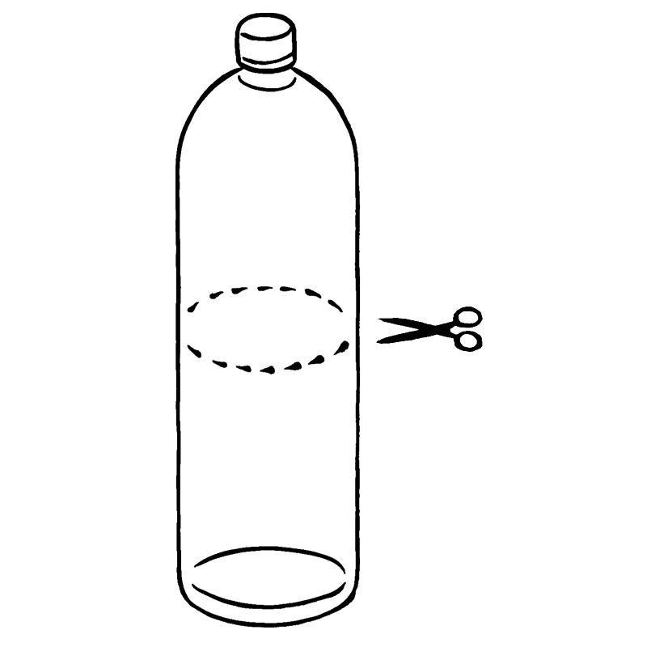
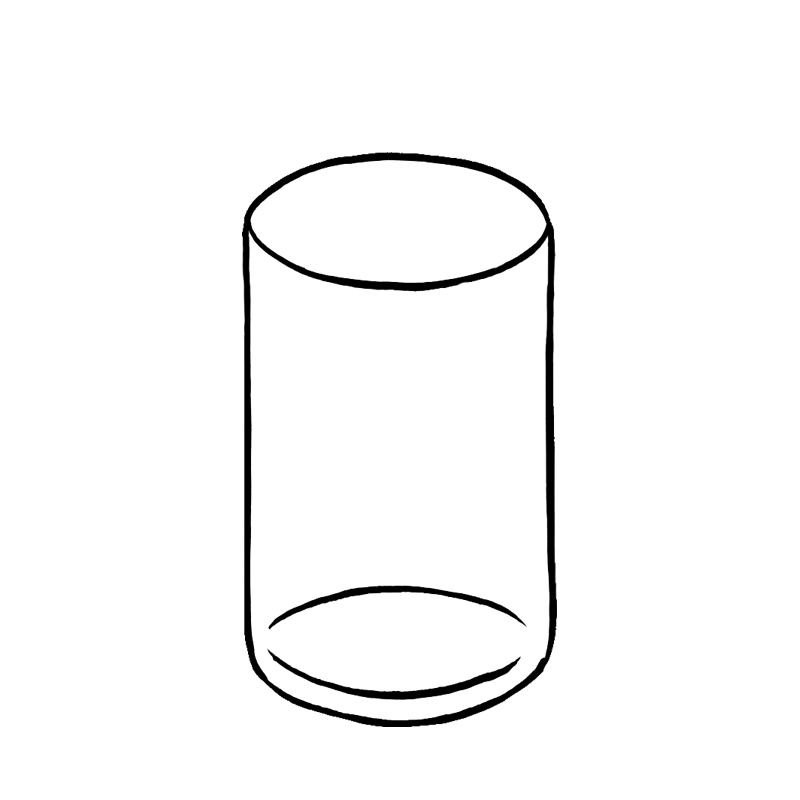

홈
채널소개
방송안내
자료실
방재
스페셜
특설페이지
notitle
수도
식기 만드는 법
단수되어 사용할 수 있는 물의 양이 적어도 청결을 유지할 수 있는 방법을 확인합시다.
목차
플라스틱 병으로 접시 만들기
우유팩으로 숟가락 만들기
신문지로 그릇 만들기
플라스틱 병으로 컵 만들기
몸 닦기
소재
플라스틱 병, 커터칼, 가위
2L 페트병을 가위로 자릅시다. 손을 다치지 않게 주의합시다.

세로로 자릅시다.

우유팩으로 숟가락 만들기
소재
우유팩, 가위
500ml 우유 팩 위의 삼각 부분을 자르고 세로 4개로 잘라냅시다.

접어서 그림의 사선 부분을 잘라내면 숟가락이 됩니다.자르는 각도에 따라 숟가락의 깊이가 달라집니다.

신문지로 그릇 만들기
소재
신문지, 비닐 봉투
신문을 삼각형으로 접고, 바닥이 있는 컵 형태로 만듭시다.

접은 신문지 위에 비닐봉투를 씌우고 아래에서 묶습니다. 접시로도 컵으로도 사용이 가능합니다.

플라스틱 병으로 컵 만들기
소재
페트병, 가위, 커터칼
플라스틱 병의 상단을 가위 또는 커터칼로 자릅시다.

가능한 한 부드럽게 잘라 부상을 입지 않도록 합시다.

수도
홈